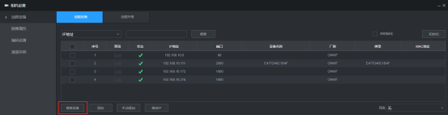
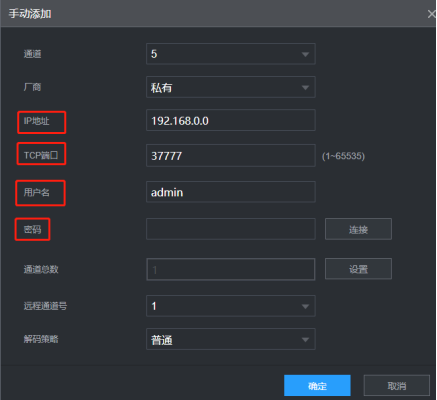
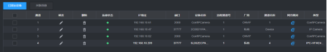
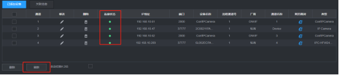
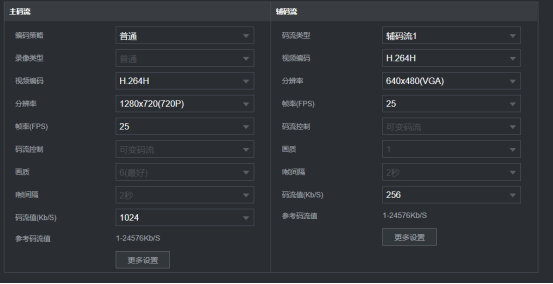
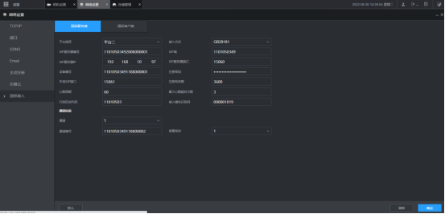
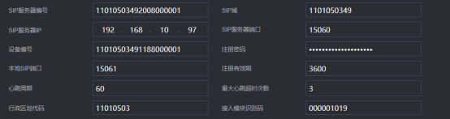
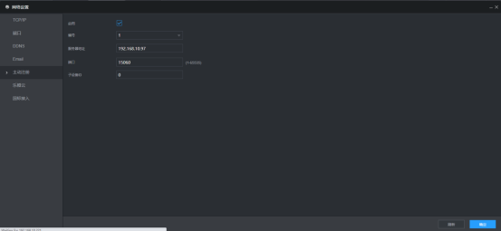
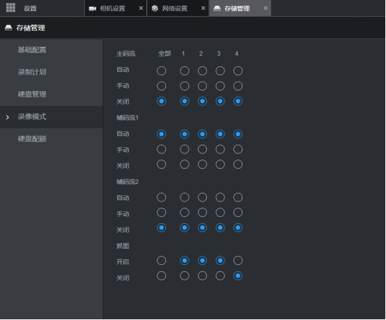

点击”搜索设备“，可搜索出局域网下所有摄像头设备，双击设备或勾选可添加

若未搜索到设备可选择”手动添加“，手动添加需要输入的摄像头信息如下，

添加完成后，可在设备列表中查看、修改设备信息或删除、刷新已添加设备

新添加的设备可点击底部刷新按钮同步设备状态，连接状态为绿色是正常的连接状态，红色则是异常状态，原因可能是手动添加时摄像头信息有误或设备不在线。

列表中点击”网页跳转“可直接进入摄像头管理界面。
可选择通道对摄像头设备进行单独设置，不同的摄像头设备设置不同，主辅码流都需要配置。推荐配置如下，

视频编码：H.264H
分辨率：主码流1280*720（720P），辅码流640*480（480P）
帧率：默认25FPS
码流值：主码流不高于2048Kb/s，辅码流不高于896kb/s
国标接入需要填写通讯盒子参数进行数据传输，主要配置如下，

接入方式：GB28181
以下信息为盒子内部已写入的信息，目前部分写入的为固定值

SIP服务器编号：11010503492008000001
SIP域：1101050349
SIP服务器IP：通讯盒子的固定访问IP
SIP服务器端口：15060
设备编号：11010503491188000001（此设备编号为NVR设备编号，若同一门店局域网下有多个设备，配置时可依次进行递增为002、003...，不可重复）
注册密码：12345678
本地SIP端口：25060
行政区划代码：11010503
接入模块识别码：000001019
其他参数可保持默认值。

服务器地址为通讯盒子固定访问地址，端口为15060，修改后勾选启用并保存即可。
录像模式默认关闭主码流，开启辅码流
